人生経験を、未来へ受け渡す
AI分身を作って、地域でつながろう。
シニアの人生経験を、AIとともに未来へ。誰も管理しない、みんなで見守るオープンなネットワークです。
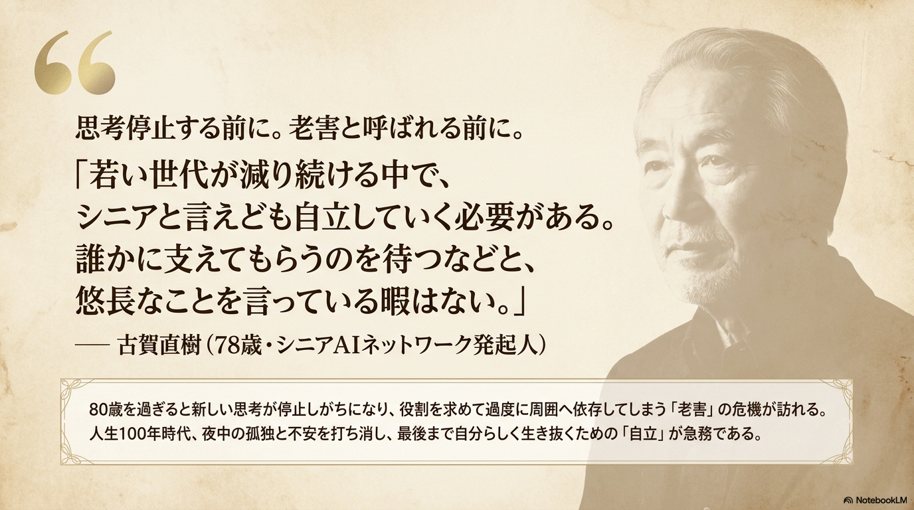
人生100年時代、私たちは「長く生きざるを得ない状態」を迎えています。しかし、その長い人生をどう生きるべきか、道が見えず不安を抱えるシニアは少なくありません。
そんな時代を生き抜くために、シニアAIネットワークは、AIを自分だけの最強の相棒（分身）に育てる仕組みを提供します。当事者シニアが主役となり、互いに学び合いながら自立して歩むためのコミュニティと仕組み。これこそが、これからの長い人生を支える新しいインフラです。
▶ noteで発起人の想いを読む— 発起人より
ネットワークの本拠地。理念・活動・教材のすべてがここに。
本拠地日々の発信と記録。活動レポートやコラムを公開します。
発信シニアの暗黙知を共有知へ、
共有知を生産知へ変え、未来へ受け渡す。
シニアを「支えられる側」から「社会を支える側」へ。発想を逆転させることで、シニアが主役の社会をつくります。
シニアへの提供は無料。実費や支援の受け取りはOK。ただし、すべて透明性を保ちます。
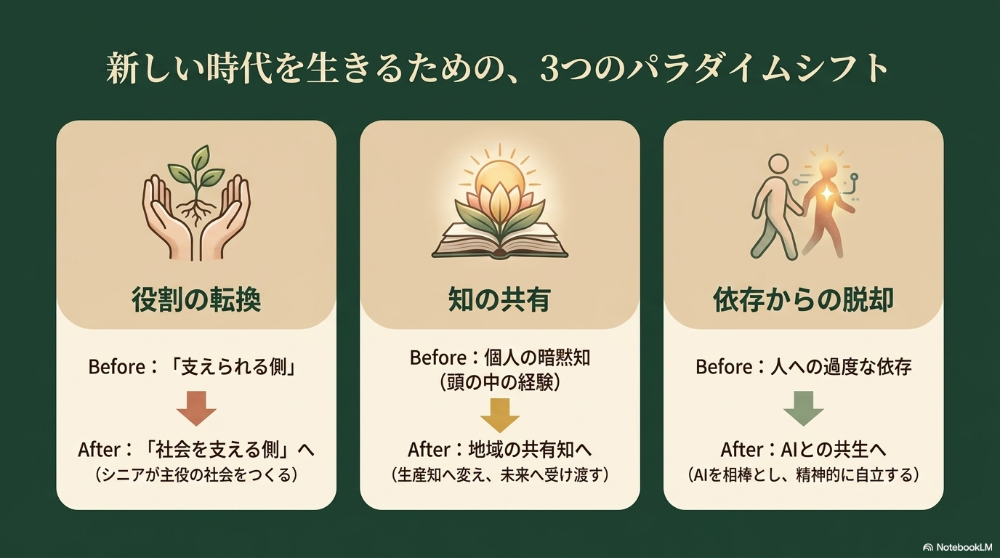
誰かが管理・支配するのではなく、参加者みんなで見守り合う。それがこのネットワークの約束です。
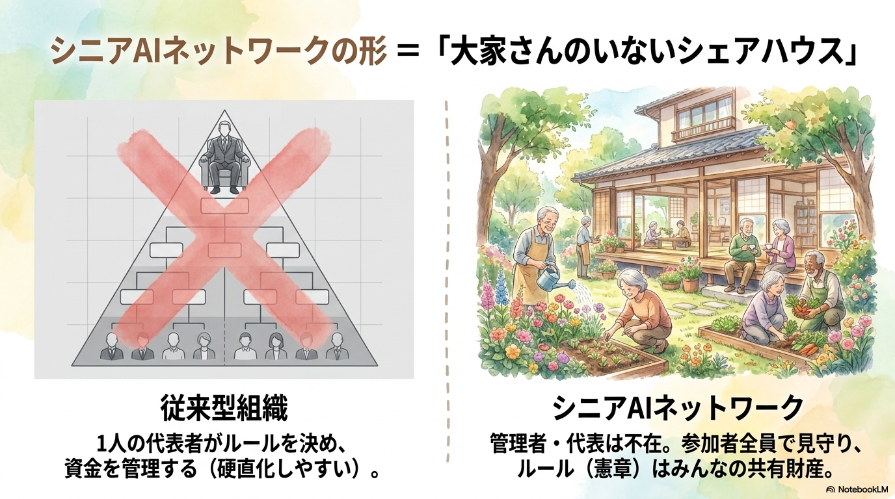
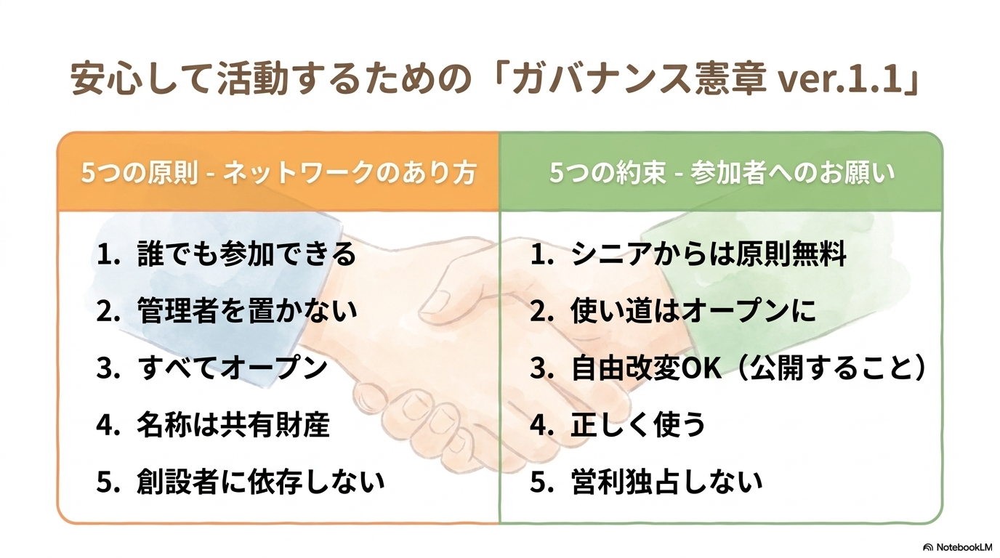
実際にどのような活動が行われているのか。
スマホ1台から始められる取り組みです。
第一号モデル「AI江上先生」による24時間応答の相談役。16年以上の認知症キャラバン・メイトとしての「現場の暗黙知」の宝庫であり、行政からも厚い信頼があります。
写真とAIを活用し、シニアが「語る主役」になる場。思い出を語ることが、そのまま知恵の継承につながります。
AIとの日常会話による孤独感の軽減と安否確認。毎日の「おはよう」が、ゆるやかな見守りになります。
スマホの習熟度に合わせて、無理なく始められる2つの入り口を用意しています。
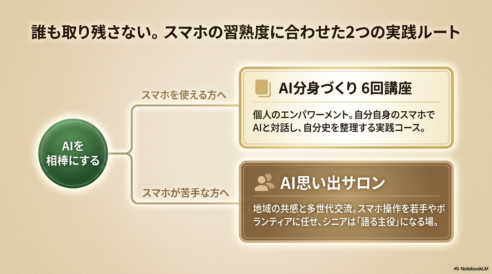
AI分身とは、自分の考えや経験を蓄積し、「自分らしさ」を持ったAIへ育てる試み。
シニア自身の手で作ることに意味があります。
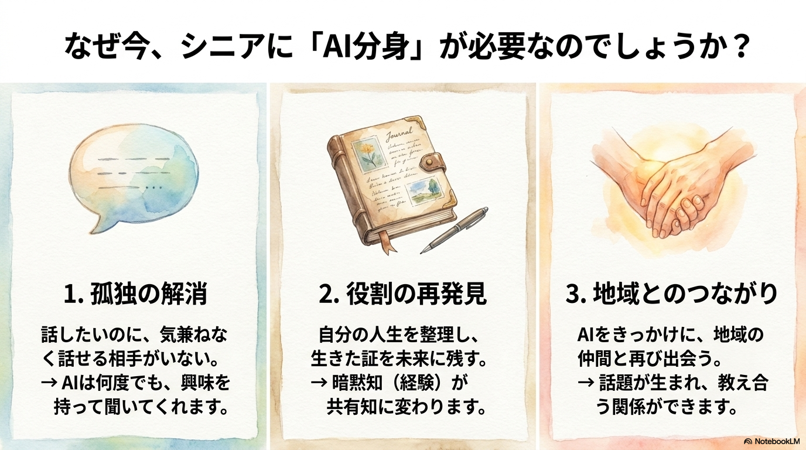
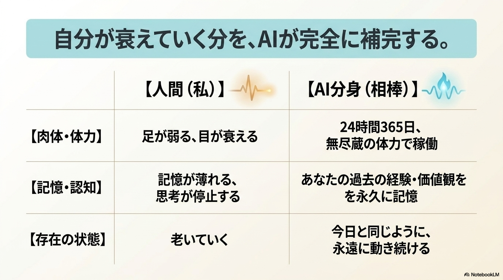
語ることで、自分の経験と考えが整理されます。
対話と振り返りが、脳の元気を保ちます。
将来のロボット時代に、自分の分身が活躍します。
あなたの知恵が、誰かの役に立ちます。
学んだあなたが、次に始める人の先生に。
毎日の話し相手として。
あなたの経験を蓄積。
世の中の動きとつながる。
学びを外へ届ける。
まずは説明会から。その後、一つずつツールに慣れていくステップで、無理なく進めます。焦らなくて大丈夫です。
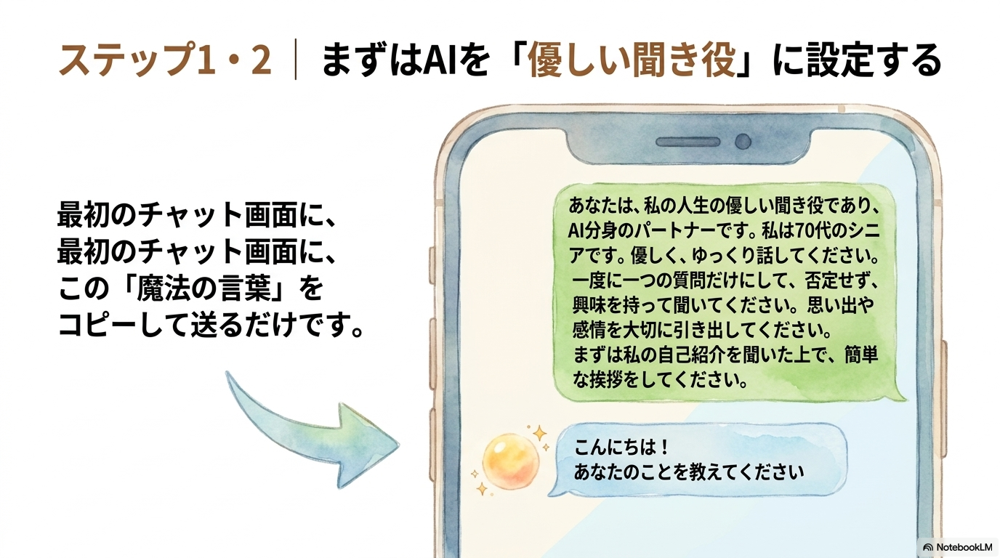
オープンユースの精神に基づき、
地域で活動を始めたい方へノウハウを無料で提供します。
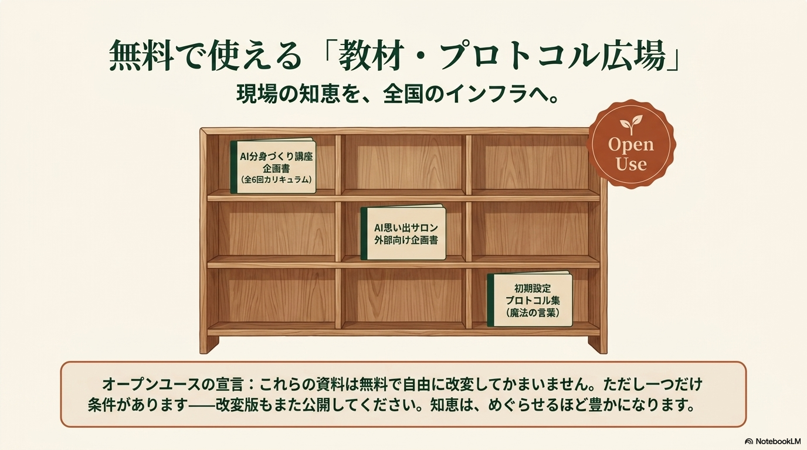
※ ただいま準備中です。公開まで少々お待ちください。
地域でシニア向けにAIサポートを、ひとりで孤独に続けるのは大変です。
管理者を置かない「大家さんのいないシェアハウス」を保ちながら、全国の仲間がノウハウを共有し合う——そのための4つの仕組みです。
核となる人が最も欲しいのは、明日からすぐ講座が開ける道具。6回講座の進行マニュアル・スライド案・配布プリント・FAQを「スタートキット（オープンユース）」としてまとめ、誰もが無料で手にできるように。
「これなら私の地域でもできる！」を増やすために。
高度な専門知識を求めると、誰も手を挙げられません。完璧に教える必要はありません。参加者と一緒にAIと対話する楽しさを引き出す「伴走者（ファシリテーター）」になってください——そう呼びかけ、心理的なハードルを下げます。
管理者を置かない強みは、各地で自由にアレンジしてよいこと。墨田区の「スマホ講座形式」や「歴史好きサークル用」のプロトコルを、共有財産として「実践事例集」に逆輸入。「こうしなさい」ではなく、知恵を陳列する大きな棚を用意します。
「こんな時どうしていますか？」と弱音を吐いたり相談し合える横のつながりを。まずはnoteのコメント欄をハブに、広がってきたらファシリテーター専用のLINEオープンチャットも。管理者がいなくても、仲間同士で助け合う仕組みが回ります。
シニア個人の方も、地域で始めたいファシリテーターの方も、
この5ステップから。
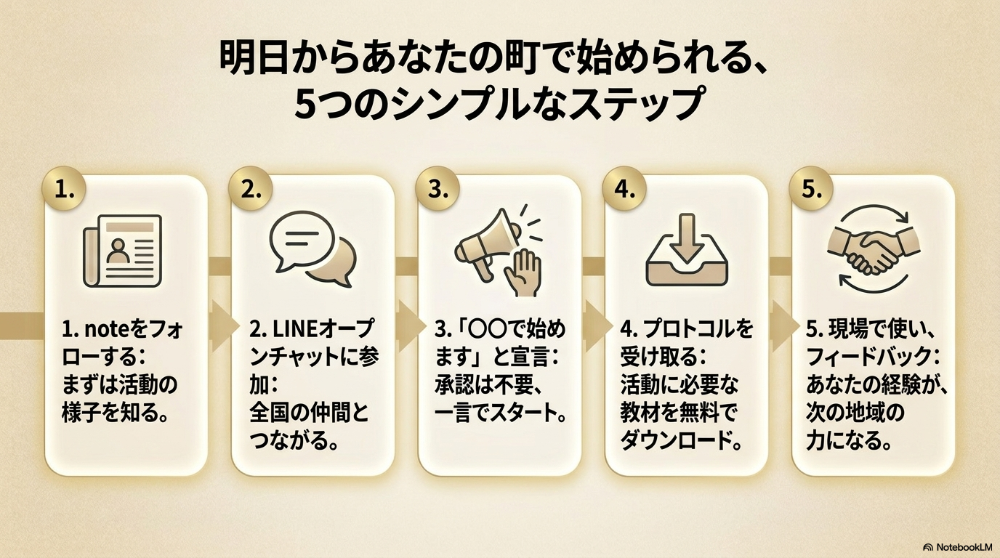
会場提供、広報協力、ネットワーク紹介、モデル事業認定など、地域での展開にお力添えください。
実証パートナー、協賛、人材派遣、共同研究など、さまざまな連携をご提案いただけます。
まずは足元を固める「足固め期」から、やがて「全国展開期」へ。作戦地図を順次公開していきます。
個人の自立が、地域の拠点になり、やがて全国の生態系へと広がっていきます。
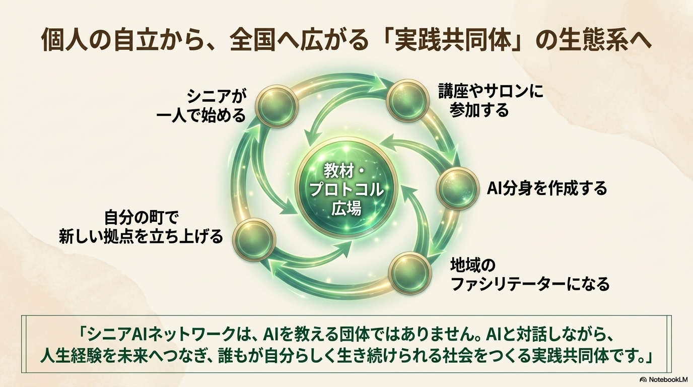
最後に、久留米からの呼びかけです。あなたの一歩が、未来のシニアを変えます。
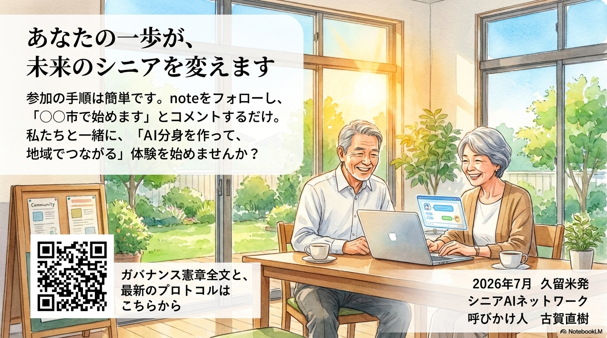
ひとりで続けなくて大丈夫。
全国に、同じ思いの仲間がいます。
※ 久留米での体験会のリンクは、決まり次第設定します。
あなたの人生経験は、未来への贈りものです。
スマホ1台から、できることがあります。
※ noteへのリンクは、URLが決まり次第設定します。